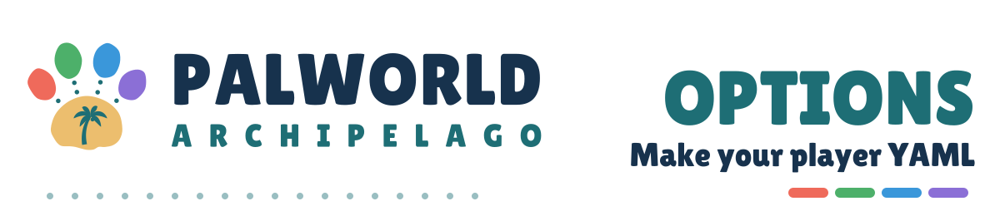

Palworld Archipelago options
A YAML is your settings file for one game in the multiworld: your player name and how your Palworld game plays. Pick your options here, or start from a preset, and download it.
Then send the file to whoever generates the multiworld. They also need palworld.apworld from the
same release as your mod. Your player name here is the Slot you type in the mod's Archipelago menu on the
title screen.